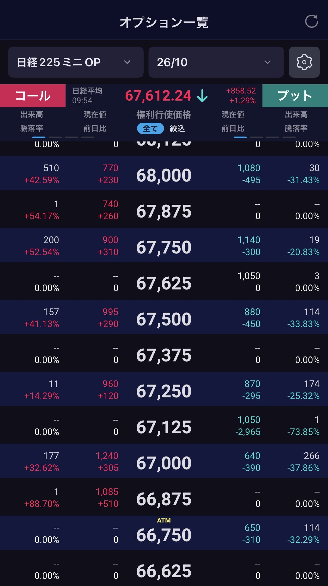
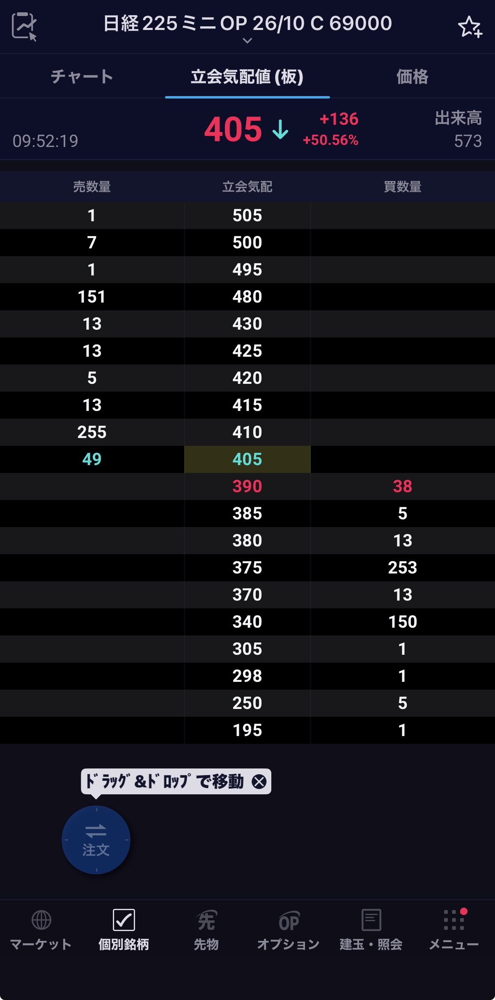
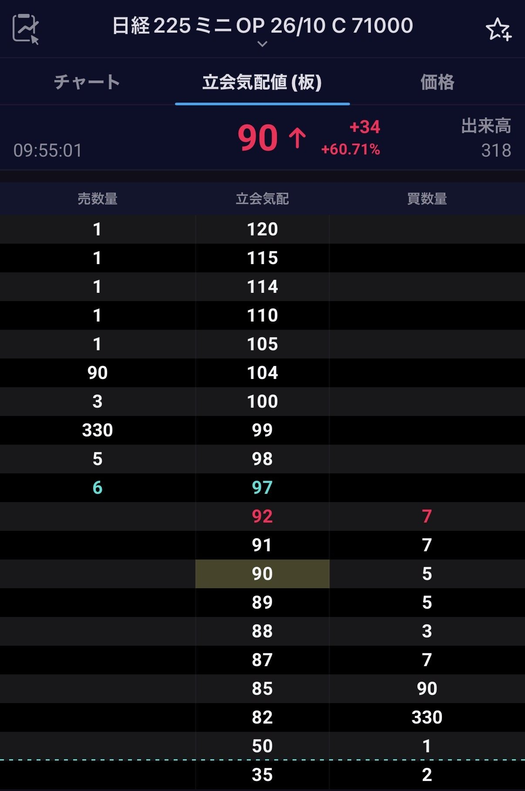
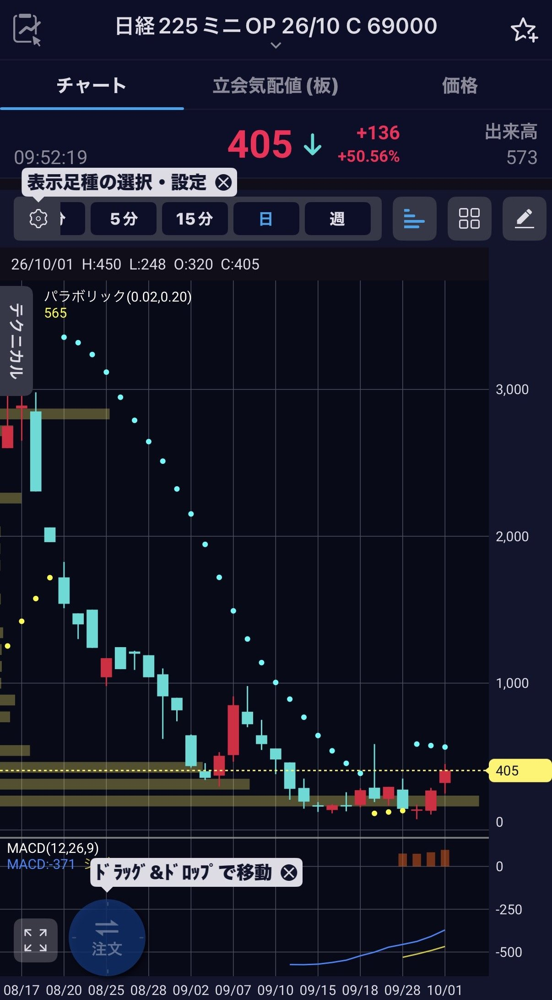
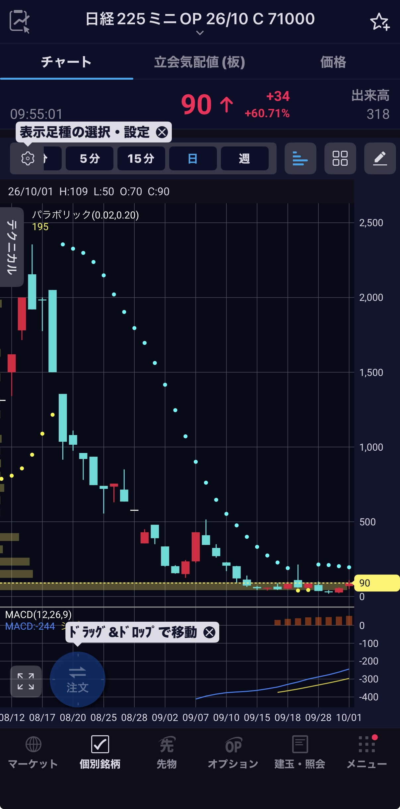

原文は提供された文章をそのまま掲載。ファクトと違う点・確認できなかった点は欄外（右、狭い画面では段落の下）に明記。照合は2026年9月30日時点。
今週9月20日に行われたベルリン州議会選挙で、極左政党と言われる「ディー・リンケ」が第一党になりました。選挙管理当局が21日に公表した暫定結果では、政党への投票にあたる第二票の得票率は25.7％。メルツ首相のキリスト教民主同盟（CDU）は18.8％でした。同じ日のメクレンブルク＝フォアポンメルン州議会選挙では、極右AfDが第一党となり、CDUは議席獲得に必要な5％を下回り、首相の党が、左右の異なる勢力に敗れた日でもありました。
一方、メクレンブルク＝フォアポンメルン州、通称メクポムでは、極右のAfDが16〜24歳で36％、25〜34歳で32％。若年層では州全体の約38％を下回りますが、どちらの年代でも第一党です。つまり、地方の若者たちは、ベルリンの若者と同じ選択をしたわけではなく、極左によって固められた首都周りを極右が取り囲むような形になっています。
さらに、AfDは35〜44歳で46％、45〜59歳で47％と、中年層で強い支持を集めています。ところが70歳以上になると26％に下がり、SPDが52％で過半数を占める。極左にとっての都市部若年層、極右にとっての中年層と地方の若年層、保守にとっての高齢層という、支持の濃淡が見えてきます。この傾向は、米国でも顕著です。
現在、極左と言われる「ディー・リンケ」は2007年、二つの派閥が合流して誕生しました。ひとつは、旧東ドイツの支配政党だった社会主義統一党（SED）から改組された民主社会党（PDS）。もうひとつは、SPD政権の社会保障・労働市場改革に反発した旧西ドイツ側の元SPD党員や労働組合関係者らによるWASGです。旧体制の後継という歴史と、統一後の市場重視の改革への反発が、同じ党に重なっているのが特徴です。
その歴史を持つ党が、いま支持基盤を広げています。旧東ドイツの伝統的な支持層に加え、都市の若者や女性、移民背景をもつ住民へと支持を広げ、若返りを進めました。仏紙ルモンドによると、全国の党員数は2024年末の約6万人から2025年末には12万3,000人へ。わずか1年で、約2倍にふくれ上がったのです。
党の綱領が目指すのは、資本主義を超える「民主社会主義」です。生活を支える公共サービスやインフラ、金融、エネルギーを公共的な所有と民主的な管理のもとに置く構想を持ち、富裕層への資産課税や生活費の規制も求めています。住宅会社の社会化は、その所有観が暮らしに直結する政策として現れた結果です。利益を分配する段階に加え、利益を生む資産を誰が持つかまで変えようとする。ここに、この党の急進性があります。
筆頭候補のエリフ・エラルプが前面に掲げたのは、手の届く家賃で暮らせる街を取り戻すこと。その政策には、大手不動産会社が持つ約22万戸の住宅を公共的な所有へ移す「社会化」が含まれます。かつて公営住宅の民営化を進めた街で、今度は住宅の所有を公共側へ戻そうとする公約が支持を集めたのは、大変興味深いところです。現在、毎月の家賃という身近な問題が、街の資産を誰が持つべきかという大きな問いに変わっています。
一体、なぜ、ここまで大きな変更を求めるのでしょうか。
ベルリン投資銀行（IBB）の2025年版住宅市場報告によると、管理費や暖房費などを除く募集家賃の中央値は、2016年から2025年にかけて約75％上がりました。1平方メートルあたりの月額で、9ユーロから15.78ユーロへの上昇です。これは、すでに暮らしている全住民の家賃が一律に上がったという意味ではありません。公開された募集情報の数字で、これから部屋を探す人が直面する価格です。
たとえば、昇給しても、引っ越し先の家賃がそれ以上に高ければ、暮らしは楽になりません。仕事を選び直そうにも、通える場所に部屋がない。子供が生まれるので広い家を探すと、その家賃のために、子供と過ごす時間を減らして働かなければならなくなる。こうした状況では、経済成長率が少し上がったという話が、遠く聞こえて当然です。
これまで、生活を支える政策の中心には、税金を集めて給付するという発想がありました。住宅費が高ければ、家賃補助を出す。ところが、借りられる部屋が足りないまま補助を増やすと、その一部が家賃の上昇に吸収される可能性があります。住民を助けるために使った税金が、結果として所有者の収入を支える。供給が追いつかない住宅市場では、そんな矛盾も起こりえます。
そこで出てくるのが、家賃を払う人への支援とともに、家賃が決まる仕組みを変えよう、という要求です。さらに進めば、住宅を誰が所有し、そこから生まれる収益を何に使うのかまで、政治の争点になる。
そもそも、街の価値は、建物の所有者だけがつくるものではありません。鉄道が便利になり、学校が整い、近所に良い店ができる。音楽家が集まり、夜に人が歩き、街の名前が知られるようになる。そこで暮らし、働く人たちの活動が、場所の魅力を育てます。ところが、その魅力が家賃に反映されると、街を面白くした店や人が、そこに居続けられなくなっていく。街を育てた人々が、その成功によって街から押し出される。このねじれを、どう解くのか。ベルリンの選挙は、住宅をめぐるそんな問いに他ならないのです。
果たして、政権が変われば、街をつくる人が、その街で暮らし続けられるのでしょうか？
それとも、この問いに答えられない都市から、本格的に「あたらしい社会主義」は広がっていくのでしょうか？
今週9月13日、スウェーデンで総選挙が行われました。結果は、中道左派の野党ブロックが176議席、与党側が173議席という僅差で野党が過半数を取りました。差は約5万票で、投票率は約84.8％。つまり国家が真っ二つに割れた形です。
スウェーデンは長いあいだ、開かれた社会と手厚い福祉を両立させた「北欧モデル」の象徴でした。高い税金を負担する代わりに、医療、教育、育児、老後を国家が支える。その制度を成立させていたのは、お金だけではありません。
自分が払った税金は、同じ社会を構成する誰かのために使われる。そして、自分が困ったときには社会が助けてくれる。この相互信頼こそが、北欧型福祉国家の見えない通貨でした。
ところが、2015年の欧州難民危機で、人口約1000万人のスウェーデンは、年間16万人を超える難民申請者を受け入れました。人口比で考えれば、世界でも突出した規模です。
その後、移民の統合、住宅不足、学校の分断、福祉負担、ギャング犯罪などが政治の中心課題になりました。2022年の総選挙では、移民抑制を掲げるスウェーデン民主党が20.5％を獲得し、議会第二党にまで躍進しています。
そして今回の選挙でも、移民、犯罪、治安、国防が大きな争点になりました。ただし、移民に厳しい政策を支持する人々が、同時に福祉国家の解体を望んでいるわけではありません。
むしろ逆で、医療を守ってほしい。年金を守ってほしい。電気代が上がれば補助してほしい。子育て世帯を支援してほしい。犯罪から地域を守ってほしい。そして、自国民の生活を最優先してほしい。つまり、有権者が求めているのは小さな政府ではありません。
「自分たちのために働く、大きくて強い政府」です。かつての右派は、小さな政府、減税、規制緩和、自由貿易を掲げました。かつての左派は、大きな政府、再分配、労働者保護、国際連帯を掲げました。
しかし、現在の有権者は、この二つの思想を奇妙な形で組み合わせ始めています。移民と国境については右派。賃金、住宅、医療、教育、エネルギーについては左派。文化的には保守的で、経済的には国家介入を求める。
外国から入ってくる人には厳しく、国内にいる人には手厚くする。自由貿易には懐疑的ですが、生活補助には積極的です。この新しい政治を、従来の「右か左か」という一本の線で理解することはできません。
そもそも、なぜこのような変化が起きたのでしょうか。
この30年間、グローバリゼーションはテレビ、衣服、家具、スマートフォンを安くしました。その一方で、住宅、医療、教育、エネルギー、老後という、人生に不可欠なものは高くなりました。人々は安い商品を手に入れましたが、安定した人生を失いました。
GDPは増えても、自分の給料は増えない。株価は上昇しても、家を買えない。街には新しい店が増えても、自分が育った地域には住めない。移民が経済成長に必要だと説明されても、学校や病院や住宅の混雑は自分たちが引き受ける。エリートは「経済全体では得をしている」と説明します。
しかし、有権者が見ているのは経済全体ではありません。自分の家賃、自分の電気代、自分の子供が通う学校、自分の街の治安です。このずれが、世界各地で中道政党やエリート官僚システムを破壊しています。
おそらく2030年代前半までに、世界の主要民主国家から、従来型の中道政治は急速に消えていくでしょう。右派政党は、小さな政府や自由貿易へのこだわりを捨て、国境管理、関税、産業補助金、家族給付、エネルギー価格統制を組み合わせます。左派政党も、無制限の国際連帯を諦め、福祉制度を維持するために移民を選別し、給付を受けられる人の範囲を狭めるようになります。
国境は右へ、経済は左へ。
果たして、それは崩れかけた民主主義を守る防波堤になるのでしょうか。
それとも、人々を静かに選別する巨大な装置になるのでしょうか。
今週は、ウィーンにいます。
地中海の光から一転して、この街は、もう秋模様。街路樹が色づき始めた通りを歩いていると、ヨーロッパの都市のなかでも、文化的厚みからウィーンほど「かつて世界の中心だった」ことがにじみ出る街はないと、あらためて思います。
ただ、今回この街に来て最初に感じたのは、建築の重厚さでも音楽の気配でもなく、政治圧の変化でした。
現在のオーストリアで世論調査の首位に立っているのは、極右と言われる自由党（FPO）です。世論調査を集計するPolitProの9月16日時点の推計では38.7％。首相を出している国民党の21.1％を、大きく引き離しています。2024年秋の総選挙で自由党は28.8％を得て、初めて第一党になりました。
しかし、極右の自由党を阻止すべく、連立交渉を経て2025年3月に発足したのは、シュトッカー首相率いる国民党・社民党・リベラル政党NEOSの三党連立でした。それから一年半、自由党は野党のまま支持を広げています。
キックルは支持率の高さから、自らを「国民宰相（フォルクスカンツラー）」と呼んでいます。ナチス時代を想起させるとして批判されてきた呼称を使う政治家が、次の政権を着実にうかがっている。それが、2026年秋のオーストリアです。
ところが、レストランやカフェに座っていると、その気配はまったく感じられません。ウィーン市そのものは1945年以来、社民党が市政を率いてきた「赤いウィーン」で、2025年の選挙後も社民党とNEOSの連立が続いています。全国では自由党が伸びても、首都は別の政治を選んでいる。現在、欧州で顕著なのは、こうした大都市と国全体の温度差です。
地図を見ると、ウィーンが東西の接点であることがよくわかります。ウィーンはプラハよりも東にあり、スロバキアの首都ブラティスラバまでは直線距離で約55キロ。僕自身、何度も国境を越えて、タクシーで移動したことがあります。かつて冷戦時代、鉄のカーテンはすぐ東に引かれていました。
いま、その向こうにはスロバキアのフィツォ政権、昨年12月に返り咲いたチェコのバビシュ政権があります。一方、ハンガリーでは今年4月、16年続いたオルバーン政権が選挙で敗れましたが、勝ったのは元与党員マジャルが率いる中道右派で、東から右傾化が着実に忍び寄るように感じています。
先週9月6日には、隣国ドイツの旧東独ザクセン＝アンハルト州の議会選挙で、極右AfDが43.8％を獲得し、メルツ首相の与党CDUは17.2％まで支持を落としました。AfDの支持率が高い地域を地図に塗ると、そこにはほぼ正確に、消えたはずの東ドイツの国境線が浮かび上がります。壁が崩れて37年、地図の上では、いまも壁が立っているのです。
この東西の断層には、ロシアとの関係も重なります。オーストリア自由党は2016年にプーチンの与党「統一ロシア」と協力協定を結んだ党であり、ウクライナ支援にも対ロ制裁にも反対する姿勢を掲げています。
僕がこの街で右傾化のニュースを聞くと、どうしても90年代を思い出します。当時、米国とヨーロッパを行き来していた僕がウィーンの街角で繰り返し目にしたのは、日焼けした顔にイタリア製のスーツを着た、ケルンテン州知事イェルク・ハイダーでした。
ナチスの「秩序ある雇用政策」を称賛して州知事の座を追われ、武装SSの退役軍人の集会で「立派な人格の持ち主たち」と語りかけた男は、メディアが批判すればするほど支持を伸ばし、1999年の総選挙で自由党を26.9％、わずか415票差で国民党を抜いて第二党に押し上げました。
何度かウィーンの街角で偶然拝見しましたが、演説は実に見事でした。翌2000年、国民党が自由党と連立を組むと、EUの他の14カ国はオーストリア政府との高位の二国間接触を制限し、イスラエルは大使を召還。
ウィーンでは毎週木曜日の夜に大規模なデモが続き、「ヨーロッパの真ん中に極右政権が生まれた」という衝撃は、当時大陸のどこにいても伝わってきました。そのハイダー自身は2008年、深夜に制限速度の倍でクルマを飛ばして事故死しています。
そして今日、四半世紀を経て、何が変わったのか。当時のヨーロッパは、オーストリアを「隔離」できました。しかし2026年、かつて異端として扱われた勢力は欧州各国の議会で存在感を増し、既成政党は協力するのか、距離を置くのかを、その都度迫られています。
ハイダーの絶頂期に選挙で27％を得た自由党は、いま世論調査の集計で39％近くに達しています。実は、この党は数年前にイビサ島で大スキャンダルを起こし、大きな危機に直面しました。
2019年、当時の党首シュトラッヘが、イビサの別荘でロシアの新興財閥の姪を名乗る女性に、国の公共事業を見返りに選挙支援を持ちかける密談を録画され、連立政権はあっけなく崩壊しました。
世に言う「イビサ事件」です。このとき内相の座を解任されたのが、ほかならぬキックルでした。それから七年、イビサで転んだ党が、ロシアの影をまとったまま、より強くなって戻ってきた。これが、ウィーンで感じる「政治圧の変化」の正体です。
世界有数の都市だった1900年前後のウィーンは、フロイトとクリムトを生んだ都であると同時に、若きヒトラーが心酔した反ユダヤ主義の人気市長カール・ルエーガーを生んだ都でもありました。精神分析と現代ポピュリズムは、同じカフェの隣のテーブルで育ち、ハイダーもキックルも、その系譜の上にいます。ザッハトルテの甘さと政治の苦さは、この街では昔から同じ皿に載ってきたのです。
いま、急速に欧州東部の変化を感じます。
判定：一致 出典と合う ／ 相違 出典の数字と違う ／ 未確認 裏が取れていない。一次公的機関・当事者の公表 報道報道機関 解説百科・分析。
照合していない記述：チェコのバビシュ政権の発足時期、スロバキア・ブラティスラバまでの距離、自由党と統一ロシアの2016年の協定、2000年のEU14か国の措置、ハイダーの事故時の制限速度は、講師側の既知の事実と矛盾しないことだけを確認。出典は付けていない。
第9回 §2 の4つの立場を、1本ずつ重ねる。組み合わせは2つ。損益分岐点は、どちらも2つになる。



買値 売り気配 405 × 100倍 ＝ 4万500円
すぐ売ると 買い気配 390。差の1,500円が往復のコスト
損益分岐 69,000 ＋ 405 ＝ 69,405円。10/1 時点の日経平均から約3%上
買値 売り気配 97 × 100倍 ＝ 9,700円
すぐ売ると 買い気配 92。差の500円が往復のコスト
損益分岐 71,000 ＋ 97 ＝ 71,097円。10/1 時点の日経平均から約5%上


損の上限は買値まで。SQ（10月9日）に日経平均が権利行使価格以下なら、コールは0円で終わる。日経225ミニオプションの取引単位は100倍要確認。下の設例（日経225オプション）は1,000倍。
構成 コールの買い ＋ プットの買い。権利行使価格はどちらも65,000円
払うもの プレミアム 800 ＋ 500 ＝ 1,300ポイント（130万円）。証拠金は要らない
損益の限度 損は1,300ポイントまで。利益は上に上限なし、下は指数が0になるまで
見方 方向は分からない。動く幅がプレミアムの合計を超えると見る
構成 プットの売り（64,000円）＋ コールの売り（66,000円）
受け取るもの プレミアム 300 ＋ 450 ＝ 750ポイント（75万円）。証拠金を差し入れる
損益の限度 利益は750ポイントまで。損は上に上限なし、下は指数が0になるまで
見方 SQまで64,000〜66,000円の間に収まると見る
ストラドルの損益分岐点 ＝ 権利行使価格 ± （コールのプレミアム ＋ プットのプレミアム）ストラングルの損益分岐点 ＝ プットの権利行使価格 − 受取総額、コールの権利行使価格 ＋ 受取総額
設例：65,000 ± 1,300 ＝ 63,700円と66,300円。64,000 − 750 ＝ 63,250円、66,000 ＋ 750 ＝ 66,750円。組み合わせの損益は、1本ずつの損益の足し算。
各チーム、自分のリンクを開いて報告する。